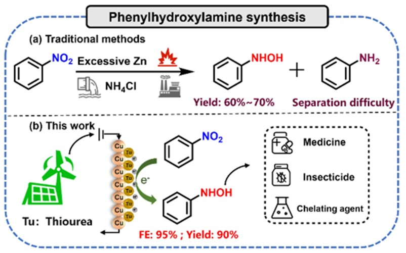
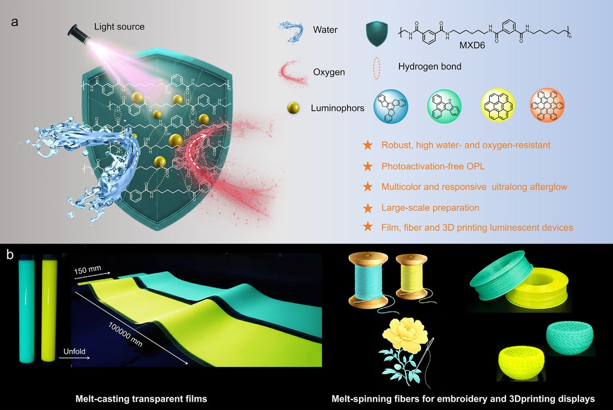
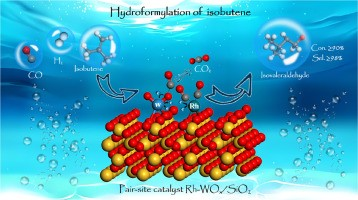
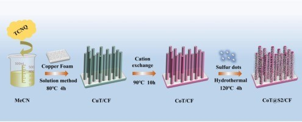
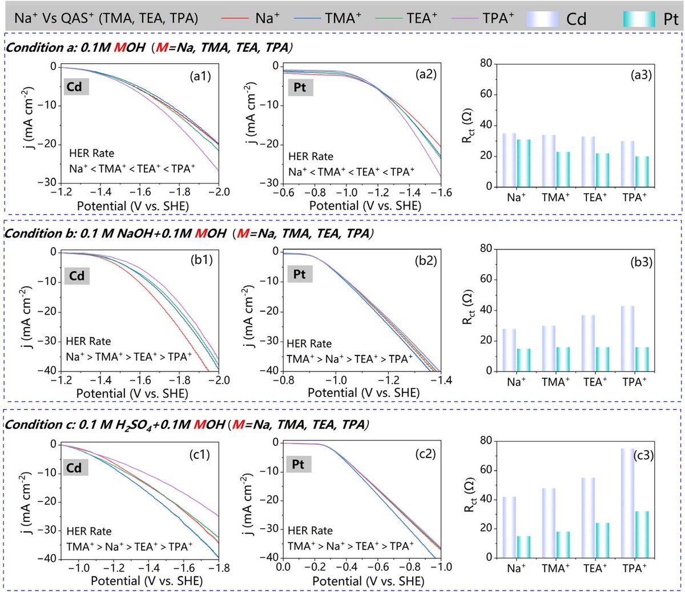
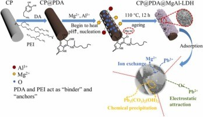

JACS 2026Thiourea-Mediated Cu Surface Boosting Highly Efficient Synthesis of Phenylhydroxylamine under High Current Density
Journal of the American Chemical Society, 2026
Ph.D. Candidate in Physical Chemistry · Guangqin Li Group · MOE Lab of Bioinorganic & Synthetic Chemistry
Email: boslin@mail2.sysu.edu.cn
My research interest lies in electrocatalytic upcycling of nitrogen oxides (NOx) and computational catalysis. In particular, I design Cu, Co–Zn and Cu–Sn electrocatalysts that reduce NO / nitrate to hydroxylamine (NH2OH) en route to value-added N-containing molecules — oximes, amino acids and isoxazoles — and unravel the reaction mechanisms with density-functional-theory (DFT) first-principles calculations.
I am currently a Ph.D. student in Physical Chemistry at the School of Chemistry, Sun Yat-sen University, working in Prof. Guangqin Li's group at the MOE Laboratory of Bioinorganic and Synthetic Chemistry / Lehn Institute of Functional Materials, where I combine electrosynthesis experiments with DFT modelling. Before joining SYSU, I collaborated with the Center of Advanced Electrochemical Energy at Chongqing University (with Prof. Xun Huang and Prof. Zidong Wei) on cation behaviour at the electrified metal/water interface, and worked on heterogeneous Rh-catalysed olefin hydroformylation and DFT at Nanjing Tech University (with Prof. Guofeng Guan and Prof. Wei Du). I received my B.Eng. from the School of Chemistry and Chemical Engineering, Guangzhou University.
I am open to collaboration on electrocatalytic NOx valorisation and DFT-based mechanistic studies — please feel free to ping me if you are interested.

JACS 2026Thiourea-Mediated Cu Surface Boosting Highly Efficient Synthesis of Phenylhydroxylamine under High Current Density
Journal of the American Chemical Society, 2026

Adv. Sci. 2026Bypassing Pre-Photoactivation in High-Barrier Polyamide for Robust and Scalable Organic Persistent Luminescence
Advanced Science, 2026
 Angew 2026
Angew 2026
Cu–Sn Biphasic Alloy Heterostructure With p–d Orbital Hybridization for Efficient Electrosynthesis of Amino Acids
Angewandte Chemie International Edition, 2026
Selective Conversion of NOx Into Isoxazoles via a Co–Zn Electrocatalyst Steering the Reaction Pathway
Angewandte Chemie International Edition, 2026
Copper-Triggered Dynamic Reconstruction Into Ruddlesden–Popper/Perovskite Dual-Phase Perovskite as a Functional Catalyst Coating Cathode Enables Efficient CO2 Electrolysis
Chemical Engineering Journal, 2026, 548, 181789

Mol. Catal. 2025Pair-Site Rh–WOx/SiO2 Catalyst for Hydroformylation of Isobutene: An Interface Electronic Regulation Strategy to Enhance Catalytic Efficiency
Molecular Catalysis, 2025

JCIS 2025Sulfur Quantum Dots Integration in Conductive Microrod Array Enable Superior Oxygen Evolution Performance
Journal of Colloid Interface Science, 2025

Chem. Sci. 2025 · first authorPromotion or Suppression of Hydrogen Evolution Activity? The Competition Between Sodium Cations and Quaternary Ammonium Ions at the Metal/Water Interface
Chemical Science, 2025, 16, 8922–8933

JECE 2021Mussel-Inspired MgAl-LDH/Carbon Fiber Film Modified by Polydopamine for Highly Efficient Removal of Pb2+
Journal of Environmental Chemical Engineering, 2021